Goka, Ibaraki: things to do, food and stays
Goka · Ibaraki
Goka
Highlighted on the Ibaraki map.

Stay
No bookable places to stay found in Goka — nearest options in Sakaimachi.
Dining
赤坂 五霞店
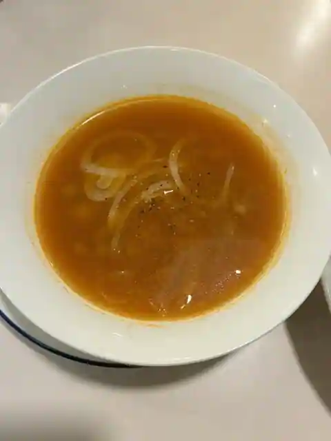
Akasaka Goka
道の駅 ごか
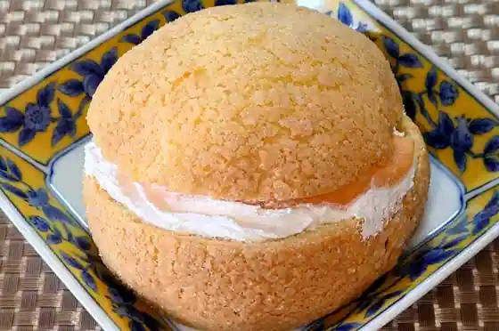
Michi No Eki Goka
お食事処 華こぶし
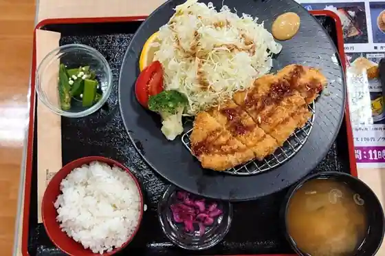
O Shokuji Tokoro Hana Kobushi
道の駅 ごか ファーストフードコーナー
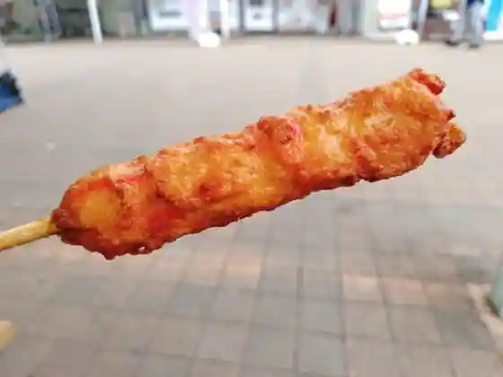
Michi No Eki Goka Fasutofudokona
西谷
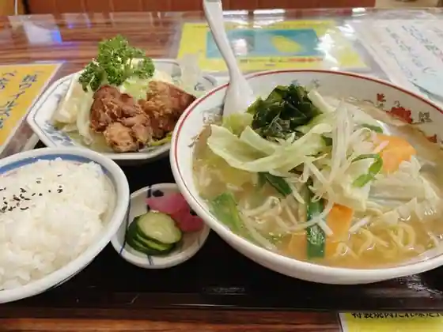
Nishitani
ごはん処 彩花
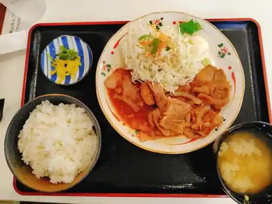
Gohan Tokoro Ayahana
ともしび
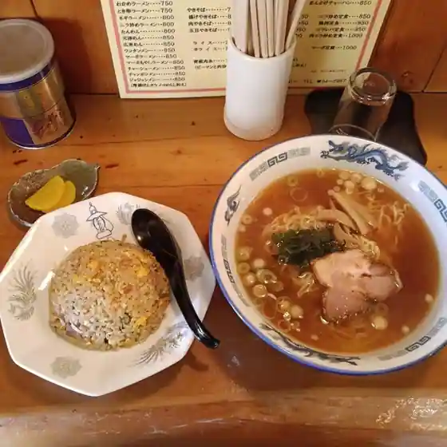
Tomoshibi
大吉
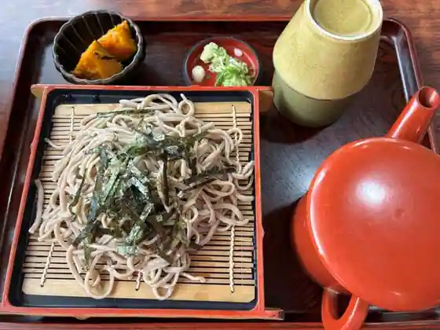
Daikichi
ばんどう太郎 五霞店

Bando Taro Goka
ラーメン 一番星
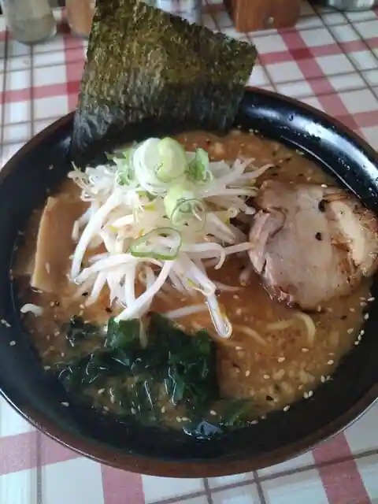
Ramen Ichiban Hoshi
玉木
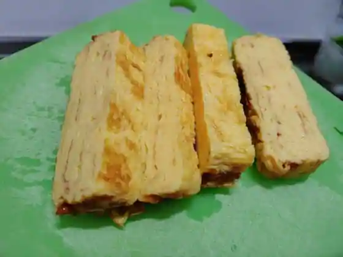
Tamaki
一ふじ
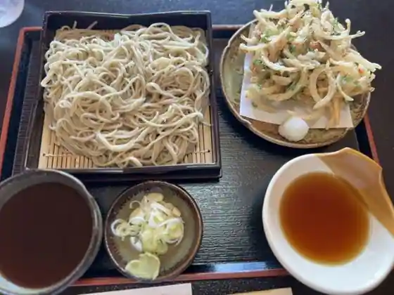
Ichi Fuji
フードコーナー軽食
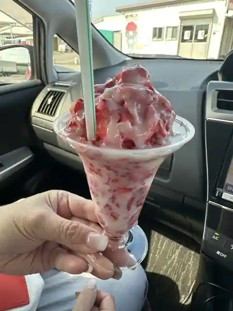
Fudokona Keishoku
千代の家
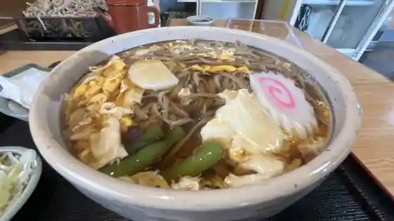
Chiyo No Ie
ふじや食堂
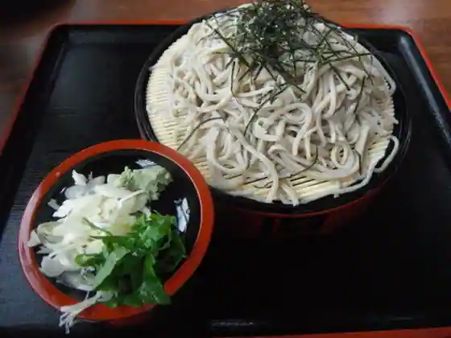
Fujiya Shokudo
居酒屋創作和食屋 和
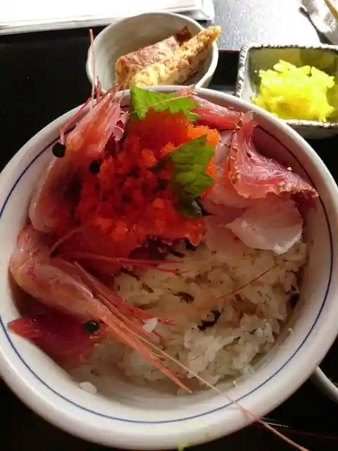
Izakaya Sosaku Washoku Ya Wa
天童
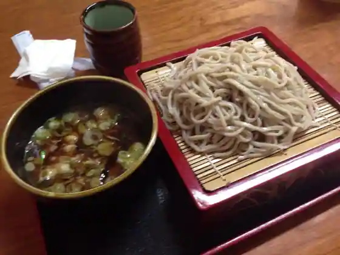
Tendo
Sights
Roadside Station Goka

Naka no Shima Park

(Kabu) Yakuruto Honsha Ibaraki Kojo
Kyupii (Kabu) Goka Kojo

Street sports park GOKA

Rajikon Park Goka
Domu Park
Some Q Teku no Rojii (Kojokengaku)
Sekiyado Suiko Mon
Hakuren no Dai Janpu !